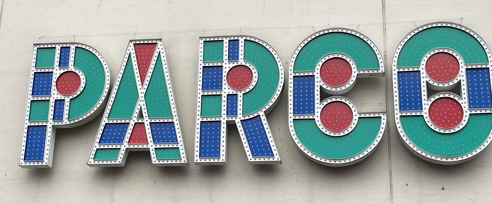

雑貨紹介
津田沼でおすすめの雑貨屋の紹介します！
津田沼のパルコには雑貨屋がいくつかあります。その中で３つお店を紹介します！

・1店舗目
無印良品
場所：パルコ B館５階


1店舗目として誰もが一度は名前を聞いたことがあるだろう無印良品の紹介をします。
無印良品は老若男女どんな人でも好まれるよな商品が中心に置かれいます。品ぞろえも多く、生活に必要なものはだいたい無印良品で揃います。
無難でシンプルな雑貨が欲しいなと思う人は是非一度無印良品に行ってみてください。きっと気に入る商品に出会えるはずです。
次に私が個人的に無印良品でおすすめの表品を３つ紹介したいと思います！
- 化粧水＆乳液
１つ目に紹介するのは無印良品の超王道商品化粧水＆乳液です！
無印良品の化粧水＆乳液はお手頃な価格で効果があると有名で多くの人が使っています。私も無印良品での初めての買い物はこの化粧水＆乳液でした。
- キッチン用品
２つ目に紹介するのはキッチン用品です！
無印良品のキッチン用品はデザインや耐久性に優れ、お手頃価格なので人気があります。特におすすめなのは「シリコーン調理スプーン」で、いろいろな用途に使えるの一度見てみてください。
- アロマディフューザー
３つ目に紹介するのはアロマディフューザーです！
部屋の香りを追加したいなと思っている人に特におすすめです。約４６種類のエッセンシャルオイルから自分好み香りを選べるという点も大きなポイントです。
・2店舗目
吉祥寺 菊屋
場所：パルコ A館１階


２店舗は吉祥寺 菊屋を紹介します。
吉祥寺 菊屋は「日々の生活に楽しさと豊かさ」をモットーに食器やキッチン雑貨、インテリア雑貨を取り扱うお店です。
カラフルな食器や珍しい柄の食器が多く揃っているので、普段から料理をする人は興味のわく商品が見つかるのではないでしょうか。
・3店舗目
studio CLIP
場所：パルコ A館１階


３店舗はstudio CLIPを紹介します。
studio CLIPには他のお店にはないような雑貨が数多く取り扱わています。
部屋の内装にこだわりたい人はこのお店を見てみると自分の部屋に置いてみたくなるような商品に出会えるかもしれません。
ネットでの販売を行っているので気になった人は是非見てみてください。